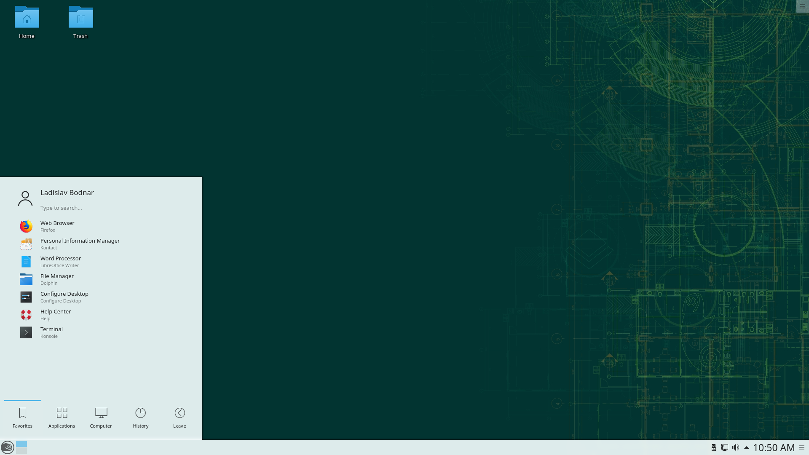
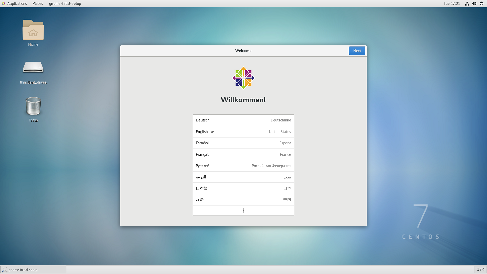
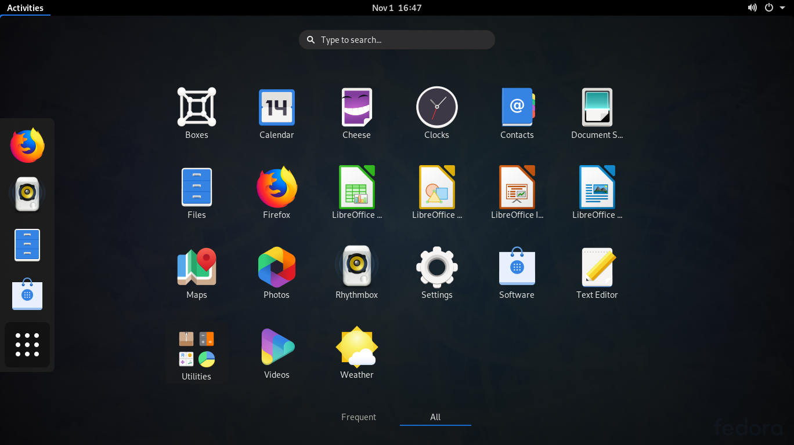

Redhat (RPM)


Redhat (RPM) |
|
|
|
|
|---|
|
Tyto distribuce jsou založeny na balíčkovacím systému RPM (Red Hat Package Manager). Jelikož samotný RPM nenabízí funkce instalaci, aktualizaci nebo odebírání balíčků ze systému, musí se o to starat jiné nadstavby jako je třeba Yum (Fedora, CentOS 5, Red Hat Enterprise Linux 5), nebo Zypper (openSUSE) a další. Všechny distribuce na této podstránce nabízí různé desktopové prostředí nebo jiné soubory balíčků ale jsou funkcionálně ve směs stejné. |
|  |  |  |
| openSUSE s prostředím KDE | CentOS s prostředím GNOME | Fedora s prostředím GNOME |
|---|